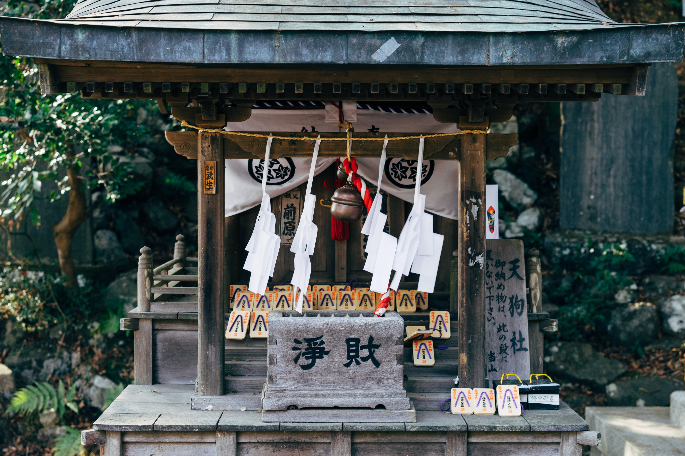

Tokyo, mégapole japonaise, est une ville fascinante où le traditionnel côtoie l'ultra-moderne. Capitale économique du Japon, elle offre une expérience unique entre temples anciens et gratte-ciels futuristes.
Visitez le temple Senso-ji à Asakusa, explorez les quartiers high-tech de Shibuya et Akihabara, et dégustez des sushis frais dans les marchés aux poissons. Découvrez la culture japonaise à travers ses jardins zen et ses bains publics.
Temples comme Senso-ji, jardins zen, cérémonies du thé.
Akihabara, Shibuya Crossing, anime et manga.
Sushis, ramen, tempura, matcha et saké raffiné.